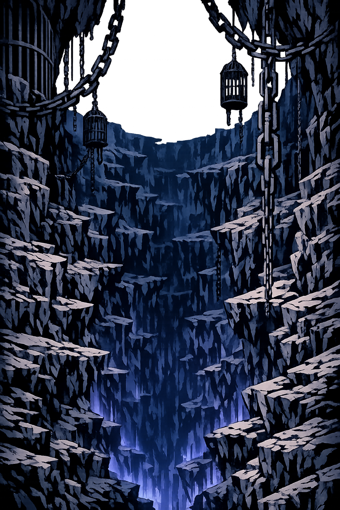

The Authentic Orthography
The Primordial Abyss · Prison of the Titans · As Far Below Hades as Earth is Below Heaven

Why tártaros.com is the correct form
Τάρταρος
The name in its original Attic Greek form. A place-name that predates the gods themselves — in Hesiod's Theogony, Tártaros is not merely a location but a primordial entity, one of the first things to come into existence after Chaos. The acute accent on the first alpha marks the stress that has been spoken for three thousand years.
TARTAROS
Stripped of its Greek identity, the name was reduced to eight Latin letters. The acute accent — the very mark that distinguishes it from common text — was erased by systems that only understand A-Z. The word became a chemical compound, a geological term, a void without voice. The original was forgotten.
Tártaros
The acute accent on the first a restores the stress of the original Greek. This is not decoration — it is philological accuracy. The accent tells us how the name was spoken in the agora, in the theater, in the mystery rites. The domain encodes to Punycode, but the browser displays the truth.
tártaros.com → xn--trtaros-hwa.com
The non-ASCII character á (U+00E1) is encoded while the ASCII remains visible. To the DNS, it is Punycode. To humanity, it is Tártaros.
How the abyss was truly spoken
A place as far below Hades as heaven is above earth
In Hesiod's Theogony, Tártaros is not merely a dungeon. It is a cosmological depth — a bronze-gated pit that lies as far beneath Hades as the sky rises above the earth. A bronze anvil dropped from heaven would fall for nine days and nine nights before reaching earth on the tenth. Drop it again from earth, and it would fall for nine more days before reaching Tártaros on the twentieth. This is not metaphor. This is geometry of dread.
Hesiod describes a gates of bronze and threshold of adamantine — unbreakable, immovable. Beyond them lies a vast hall where the Titans are bound in chains, guarded by the Hecatoncheires, the hundred-handed ones.
The anvil falling for nine days is one of the most terrifying images in Greek literature. It is a measurement of distance not in miles but in duration of dread. Tártaros is not nearby. It is not reachable. It is the furthest anything can be.
Tártaros holds not only the Titans but later Typhon, the monstrous offspring of Gaia and Tartaros himself. Some traditions place Sisyphus, Tantalus, and other great sinners here — though these are more commonly assigned to Hades.
In later Christian tradition, Tártaros was conflated with Hell itself — the place of eternal punishment. But in Greek thought, it was never primarily about moral judgment. It was about containment. The terrifying were sealed away so the cosmos could function.
Stories of imprisonment, rebellion, and the deep
After ten years of war, Zeús and the Olympians defeated Cronus and the Titans. But the victory was not enough — the defeated gods could not be killed, for they were immortal. Zeús consigned them to Tártaros, the only prison strong enough to hold beings of such power. The Hecatoncheires — Briareus, Cottus, and Gyges, each with fifty heads and a hundred arms — were set as guards at the bronze gates. The Titans remain there still, in some accounts, straining against bonds that cannot break, plotting a return that will never come.
Typhon was born from the union of Gaia and Tártaros himself — the abyss fathering terror. A monstrous creature with a hundred serpent heads, each vomiting fire, each screaming with a different voice. He challenged Zeús for dominion of the cosmos. Their battle shook the earth, split mountains, boiled seas. Zeús prevailed, hurling thunderbolts until Typhon collapsed. But he could not be killed. So Zeús cast him into Tártaros, where he lies beneath the volcanic earth, his struggles causing the eruptions that the Greeks called the fires of Enceladus. The abyss that bred him now holds him.
In some traditions — though more commonly placed in the house of Hades — the greatest sinners endure punishment in or near Tártaros. Sisyphus rolls his boulder eternally up a slope, only to watch it roll down again. Tantalus stands in a pool of water that recedes when he bends to drink, beneath branches of fruit that pull away when he reaches to eat. These are not in Hesiod's original Tártaros, which is a prison for gods, not men. But later poets conflated the two underworld realms, and the image of Tártaros as a place of punishment took root in the Western imagination. The abyss absorbed the function of the grave.
Briareus, Cottus, and Gyges — the Hundred-Handers — were the first children of Uranus and Gaia. Their father, disgusted by their monstrous form, cast them into Tártaros before any of the Titans. They dwelt there in darkness until Zeús freed them to fight in the Titanomachy. In gratitude, they agreed to stand guard over the fallen Titans, ensuring that none would ever escape. With fifty heads watching in every direction and a hundred arms ready to seize, they are the perfect jailers. What the gods fear, the Hecatoncheires contain.
Attested forms and scholarly restorations
See how Tártaros behaves in the PUNYCODEX Type Tool — with predictive autocomplete, character-by-character breakdown, and scholarly constraint validation.
tartaros
→
Tártaros